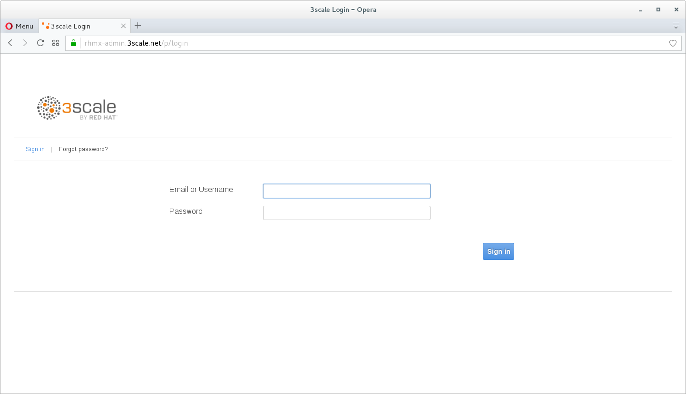
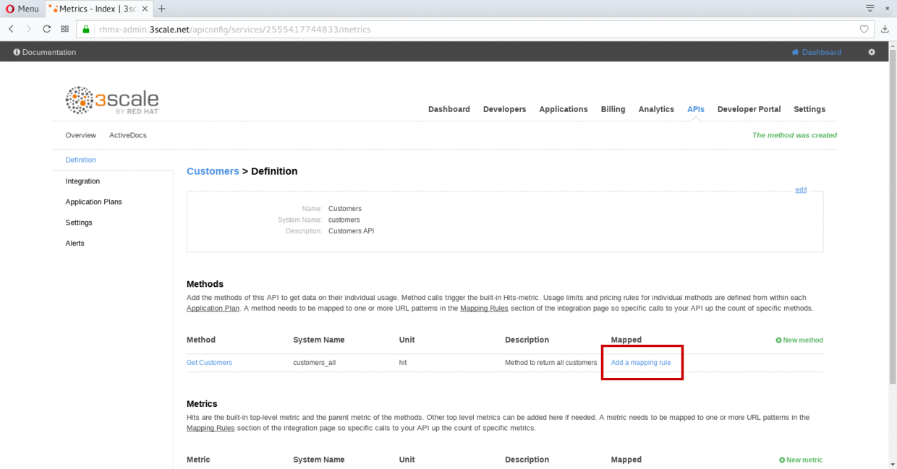
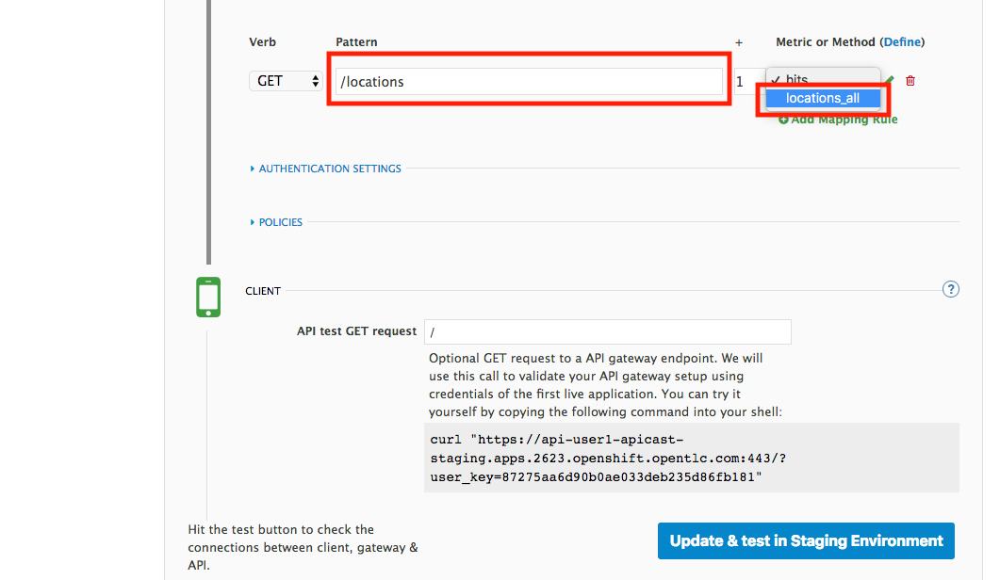

Lab 4
Managing API Endpoints
Take control of your APIs
- Duration: 15 mins
- Audience: API Owners, Product Managers, Developers, Architects

Overview
Once you have APIs deployed in your environment, it becomes critically important to manage who may use them, and for what purpose. You also need to begin to track usage of these different users to know who is or is not succeeding in their usage. For this reason, in this lab, you will be adding management capabilities to the API to give you control and visibility of it's usage.
Why Red Hat?
Red Hat provides one the leading API Management tools that provides API management services. The 3scale API Management solution enables you to quickly and easily protect and manage your APIs.
Lab Instructions
Step 1: Define your API Proxy
Your 3scale Admin Portal provides access to a number of configuration features.
Open a browser window and navigate to 3Scale. Please check with you instructor if you need the link.
Log into 3scale using your designated user and password. Click on Sign In.
The first page you will land is the API Management Dashboard. Click on the API menu link.

This is the API Overview page. Here you can take an overview of all your services. Click on the Integration link.

Click on the edit integration settings to edit the API settings for the gateway.

Keep select the APIcast deployment option in the Gateway section.

Scroll down and keep the API Key (user_key) Authentication.

Click on Update Service.
Click on the add the Base URL of your API and save the configuration button.

Leave the settings for
Private Base URL,Staging Public Base URL, andProduction Public Base URLas it is. We will come back to the screen to update the correct values in later step.Scroll down and expand the MAPPING RULES section to define the allowed methods on our exposed API.
The default mapping is the root ("/") of our API resources, and this example application will not use that mapping. The following actions will redefine that default root ("/") mapping.

Click on the Metric or Method (Define) link.

Click on the New Method link in the Methods section.

Fill in the information for your Fuse Method.
Friendly name: Get Locations
System name: locations_all
Description: Method to return all locations

Click on Create Method.
Click on the Add mapping rule link.
Click on the edit icon next to the GET mapping rule.

Type in the Pattern text box the following:
/locationsSelect locations_all as Method from the combo box.

Step 2: Define your API Policies
Red Hat 3scale API Management provides units of functionality that modify the behavior of the API Gateway without the need to implement code. These management components are know in 3scale as policies.
The order in which the policies are executed, known as the “policy chain”, can be configured to introduce differing behavior based on the position of the policy in the chain. Adding custom headers, perform URL rewriting, enable CORS, and configurable caching are some of the most common API gateway capabilities implemented as policies.
Scroll down and expand the POLICIES section to define the allowed methods on our exposed API.

The default policy in the Policy Chain is APIcast. This is the main policy and most of the times you want to keep it.
Click the Add Policy link to add a new policy to the chain.

Out-of-the-box 3scale includes a set of policies you can use to modify the way your API gateway behaves. For this lab, we will focus on the Cross Origin Resource Sharing (CORS) one as we will use it in the consumption lab.
Click in the CORS link to add the policy.

Put your mouse over the right side of the policy name to enable the reorder of the chain. Drag and drop the CORS policy to the top of the chain.

Now CORS policy will be executed before the APIcast. Click the CORS link to edit the policy.

In the Edit Policy section, click the green + button to add the allowed headers.

Type Authorization in the Allowed headers field.

Tick the allow_credentials checkbox and fill in with a star (*) the allow_origin text box.

Click twice the green + button under ALLOW_METHODS to enable two combo boxes for the CORS allowed methods.
Select GET from the first box and OPTIONS from the second box.

Click the Submit button to save the policy configuration.
Step 3: Configure the Upstream Endpoint
Scroll back to the top of the page. Fill in the information for accessing your API:
Private Base URL: http://location-service.international.svc:8080
Staging Public Base URL: https://location-userX-api-staging.amp.apps.ocp-ai.redhatgov.io:443
Production Public Base URL: https://location-userX-api.amp.apps.ocp-ai.redhatgov.io:443
Remember to replace the X with your user number.
We are using the internal API service, as we are deploying our services inside the same OpenShift cluster.
<img src="../images/07-baseurl-configuration.png)Scroll down to the API Test GET request.
Type in the textbox:
/locationsClick on the Update the Staging Environment to save the changes and check the connection between client, gateway and API.

If everything works, you will get a green message on the left.
Click on Back to Integration & Configuration link to return to your API overview.
Click on the Promote v.1 to Production button to promote your configuration from staging to production.
Congratulations! You have configured 3scale access control layer as a proxy to only allow authenticated calls to your backend API. 3scale is also now:
- Authenticating (If you test with an incorrect API key it will fail)
- Recording calls (Visit the Analytics tab to check who is calling your API).
Steps Beyond
In this lab we just covered the basics of creating a proxy for our API service. Red Hat 3scale API Management also allows us to keep track of security (as you will see in the next lab) as well as the usage of our API. If getting money for your APIs is also important to you, 3scale allows you to monetize your APIs with its embedded billing system.
Try to navigate through the rest of the tabs of your Administration Portal. Did you notice that there are application plans associated to your API? Application Plans allow you to take actions based on the usage of your API, like doing rate limiting or charging by hit (API call) or monthly usage.
Summary
You set up an API management service and API proxies to control traffic into your API. From now on you will be able to issue keys and rights to users wishing to access the API.